금속재료산업기사 (2017-03-05 기출문제)
1과목: 금속재료
1. 탄소가 0.8% 들어있는 공석강의 상온 조직은?
- 페라이트+시멘타이트
- 오스테나이트+시멘타이트
- 마텐자이트+오스테나이트
- 시멘타이트+마텐자이트
(정답률: 76%)

2. 구상흑연 주철의 바탕조직에 해당되지 않는 형은?
- 페라이트형
- 펄라이트형
- 마텐자이트형
- 소르바이트형
(정답률: 67%)
3. 절삭 및 전단 등에 사용되는 공구용 합금강의 구비조건으로 옳은 것은?
- 마멸성이 커야 한다.
- 인성이 작아야 한다.
- 열처리와 가공이 용이해야 한다.
- 상온과 고온에서 경도가 낮아야 한다.
(정답률: 72%)
4. , 비정질합금에 대한 설명으로 틀린 것은?
- 가공경화를 일으키지 않는다.
- 불균질한 재료이고, 결정 이방성이 있다.
- 비정질이란 결정이 되어 있지 않은 상태를 말한다.
- 금속가스의 증착, 스퍼터링, 화학기상반응을 통해 제조할 수 있다.
(정답률: 66%)
5. 금속의 성질을 설명한 것 중 옳은 것은?
- 결정립이 미세할수록 재료는 변형에 대하여 저항이 증가하므로 강도가 증가하는 경향이 있다.
- 결정립이 조대할수록 재료는 변형에 대하여 저항이 증가하므로 강도가 증가하는 경향이 있다.
- 결정립이 미세할수록 재료는 변형에 대하여 저항이 감소하므로 강도가 증가하는 경향이 있다.
- 결정립이 조대할수록 재료는 변형에 대하여 저항이 감소하므로 강도가 증가하는 경향이 있다.
(정답률: 74%)
6. 순철에서 일어나는 변태가 아닌 것은?
- A1변태
- A2변태
- A3변태
- A4변태
(정답률: 82%)
7. 황동의 내식성을 개선하기 위하여 7:3 황동에 주석을 1% 정도 첨가한 합금은?
- 톰백
- 니켈 황동
- 네이벌 황동
- 에드미럴티 황동
(정답률: 76%)
8. 수소저장합금에 대한 설명으로 틀린 것은?
- 수소저장합금은 수소가스와 반응하여 금속수소화물로 된다.
- 금속수소화물은 단위부피(1cm3) 중에 1022개의 수소원자를 포함한다.
- 수소저장합금은 수소를 흡수ㆍ저장 할 때에는 수축하고, 방출할 때에는 팽창한다.
- 수소가스를 액화시키는 데에는 -253℃ 정도의 저온 저장 용기가 필요하다.
(정답률: 84%)
9. Au 및 Au 합금에 대한 설명 중 옳은 것은?
- BCC 구조를 갖는다.
- 전연성은 Ag보다 나쁘다.
- Au의 비중은 약 19.3정도이다.
- 18K 합금은 Au 함유량이 90%이다.
(정답률: 72%)
10. 저융점 합금 원소로 사용하는 것이 아닌 것은?
- Bi
- Cr
- Pb
- Sn
(정답률: 55%)
11. 실용 Ni-Cu 합금이 아닌 것은?
- 백동
- 콘스탄탄
- 모넬메탈
- 슈퍼인바
(정답률: 50%)
12. 경질 자성 재료에 해당되지 않는 것은?
- 규소강판
- 알니코 자석
- 희토류계 자석
- 페라이트 자석
(정답률: 65%)
13. 다음 중 Mg-Al 합금에 해당되는 것은?
- 엘렉트론(Elektron)
- 엘린바(Elinvar)
- 퍼말로이(Permalloy
- 하스텔로이(Hastelloy)
(정답률: 53%)
14. 배빗메탈(babbit metal)이라고 불리는 베어링 합금은?
- Mg계 화이트 메탈이다.
- Sn계 화이트 메탈이다.
- Pb계 화이트 메탈이다.
- Zn계 화이트 메탈이다.
(정답률: 60%)
15. 형상기억효과는 어떤 변태 기구를 이용한 것인가?
- 페라이트
- 펄라이트
- 마텐자이트
- 시멘타이트
(정답률: 75%)
16. 전열합금에 요구되는 특성으로 틀린 것은?
- 재질이나 치수의 균일성이 좋을 것
- 열팽창계가 작고 고온강도가 클 것
- 전기저항이 낮고 저항의 온도계수가 클 것
- 고온대기 중에서 산화에 견디고 사용온도가 높을 것
(정답률: 77%)
17. 섬유강화금속(FRM)의 특성이 아닌 것은?
- 비강도, 비강성이 높다.
- 섬유 축방향의 강도가 낮다.
- 고온에서 열적, 안정성이 높다.
- 2차 성형성 및 접합성이 있다.
(정답률: 74%)
18. 금속재료로 임의의 방향으로 소성변형을 가한 후 역방향으로 하중을 가하면 처음 방향으로 하중을 가한 경우보다 변형에 대한 저항이 감소하게 되는 현상은?
- Aging 효과
- Kirkendall 효과
- Bauschinger 효과
- Widmannstatten 효과
(정답률: 76%)
19. 소결하지 않은 미분광과 무연탄을 직접 장입하며, 유동 환원로가 탈황작용을 하고 용융로에서 순산소를 사용하는 제철공법은?
- 전로(LD)법
- 코렉스(Corex)법
- 파이넥스(Finex)법
- 미니 밀(Mini mill)법
(정답률: 65%)
20. 다이의 구멍을 통하여 소재를 잡아 당겨 성형하는 소성가공법은?
- 압연
- 압출
- 단조
- 인발
(정답률: 75%)
2과목: 금속조직
21. 금속을 가공하면 변형 에너지가 발생한다. 이 변형에너지가 집적되기 쉬운 곳이 아닌 것은?
- 전위
- 결정내
- 격자간 원자
- 공격자점(공공)
(정답률: 55%)
22. 석출강화에서 석출물이 가져야 할 성질로 옳은 것은?
- 단단한 성질을 가져야 한다.
- 연속적으로 존재하여야 한다.
- 부피 분율이 작을수록 강도는 커진다.
- 입자의 크기가 조대하고 그 수가 적어야 한다
(정답률: 56%)
23. 전위선과 버거스벡터가 수직인 전위는?
- 칼날전위
- 나사전위
- 혼합전위
- 전단전위
(정답률: 80%)
24. 결정립 형성에 대한 설명으로 틀린 것은? (단, G는 결정성장속도, N은 핵발생속도, f는 상수이다.)
- 결정립의 크기는
 로 표현된다.
로 표현된다. - 핵발생속도는 과냉도가 클수록 증가한다.
- 금속은 순도가 높을수록 결정립의 크기가 작은 경향이 있다.
- G가 N보다 빨리 중대할 경우 결정립이 큰 것을 얻는다.
(정답률: 58%)
25. 금속의 합금에서 온도가 일정할 때 확산속도가 가장 빠른 것은?
- 표면확산
- 입계확산
- 격자확산
- 입내확산
(정답률: 68%)
26. 진공 또는 불활성 가스 내에 지지된 단결정 금속봉의 한쪽 끝을 고주파 유도 가열로 용해하고 이 용해된 부위를서서히 이동시켜 불순물을 정제하는 방법은?
- Bridgman법
- Czochralski법
- 융융대법
- 재결정법
(정답률: 60%)
27. 회주철에 나타나는 바탕 조직은?
- 펄라이트
- 소르바이트
- 트루스타이트
- 레데뷰라이트
(정답률: 63%)
28. 재결정에 관한 설명으로 틀린 것은?(오류 신고가 접수된 문제입니다. 반드시 정답과 해설을 확인하시기 바랍니다.)
- 순도가 높을수록 재결정 온도는 높다.
- 가열시간이 길수록 재결정 온도는 낮다.
- 냉간가공도가 클수록 재결정 온도는 높다.
- 초기입자 크기가 클수록 재결정 온도는 높다.
(정답률: 40%)
29. 평형상태도에 영향을 미치지 않는 인자는?
- 온도
- 압력
- 조성
- 입도
(정답률: 53%)
30. 금속결정의 단위격자에 대한 설명 중 틀린 것은?
- 조밀육방격자의 배위수는 6개이다.
- 최근접원자는 서로 접촉하고 있는 원자이다.
- 배위수는 1개의 원자주위에 있는 최근접원자수이다.
- 충전율은 단위격자내의 원자가 차지한 총 부피를 그 격자 부피로 나눈 체적비의 백분율이다.
(정답률: 69%)
31. 조밀육방격자(HCP)의 기저면(basal plane)을 나타낸 것 중 점선이 지시하는 방향은?
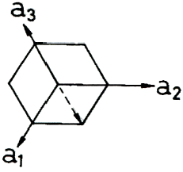
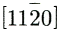
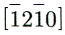
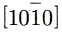
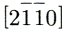
(정답률: 50%)
32. 칼날전위(Edge dislocation)에 대한 설명 중 옳은 것은?
- 부피 결함의 일종이다.
- 잉여반면을 가지지 않는다.
- 전위선과 버거스 벡터(Burgers vector)가 서로 수직이다.
- 전위선이 움직이는 방향은 버거스 벡터에 수직으로 움직인다.
(정답률: 77%)
33. Hume-Rothery 법칙을 설명한 것 중 틀린 것은?
- 밀도의 차이가 클 것
- 결정구조가 비슷할 것
- 원자의 크기차가 15% 이하일 것
- 낮은 원자가를 가진 금속이 고가의 원자가를 가진 금속을 잘 고용할 것
(정답률: 57%)
34. 점결함(point defect)에 해당되는 것은?
- 전위(Dislocation)
- 쌍정면(Twining plane)
- 적층결함(Stacking fault)
- 프렌켈 결함(Frenkel defect)
(정답률: 64%)
35. 확산에 대한 설명으로 틀린 것은?
- 용매 중에 용질이 용입하고 있는 상태에서 국부적으로 농도차가 있을 때 시간의 경과에 따라 농도의 균일화가 일어나는 현상을 확산이라 한다.
- 온도가 낮을 때는 입계의 확산과 입내의 확산의 차가 크게 되나 온도가 높아지면 그 차는 작게 된다.
- 입계는 입내에 비하여 결정의 규칙성이 산란된 구조를 갖고 결함이 많으므로 확산이 일어나기 쉽다.
- 면결함의 하나인 표면에서의 단회로 확산을 상호 확산이라 한다.
(정답률: 41%)
36. 석출경화를 얻을 수 있는 경우는?
- 단순공정형 상태도를 갖는 합금의 경우
- 전율가용고용체 형을 갖는 합급의 경우
- 어떤 형의 상태도라도 모든 합금의 경우
- 온도 강하에 따라 고용한도가 감소하는 형의 상태도를 갖는 합금의 경우
(정답률: 58%)
37. 전율고용체 합금에서 강도가 최대인 경우는?
- 합금에 따라 다르다.
- 동일 비율로 합금된 경우이다.
- 융점이 낮은 금속이 많이 포함된 경우이다.
- 비중이 높은 금속이 많이 포함된 경우이다.
(정답률: 64%)
38. 다음의 3원 공정형 상태도에서 Ⅱ영역의 자유도는? (단., Ⅰ영역은 융액, Ⅱ 영역은 고체+융액, Ⅲ 영역은 고체이며, 압력이 일정하다.)
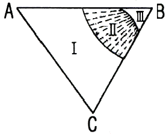
- 0
- 1
- 2
- 3
(정답률: 53%)
39. 장범위규칙도 S=
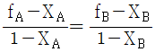
에서 fA의 설명으로 옳은 것은? (단, α격자는 A원자배열, β격자는 B원자 배열이다.)- α격자점을 B원자가 차지하는 확률
- β격자점을 A원자가 차지하는 확률
- α격자접을 A원자가 차지하는 확률
- β격자점을 A, B원자가 차지하는 확률
(정답률: 56%)
40. W, Pt의 단위격자당 원자 충전율은 각각 약 몇%인가?
- W ; 74%, Pt : 68%
- W ; 68%, Pt : 74%
- W ; 68%, Pt : 68%
- W ; 74%, Pt : 74%
(정답률: 63%)
3과목: 금속열처리
41. 냉각 방법 중 냉각 속도가 가장 늦은 열처리 방법은?
- 풀림
- 불림
- 담금질
- 수인 처리
(정답률: 49%)
42. 재료의 담금질성 측정 방법에 사용되는 시험방법은?
- 커핑시험
- 조미니시험
- 에릭션시험
- 샤르피시험
(정답률: 65%)
43. 변성로나 침탄로 등의 침탄성 분위기 가스로부터 유리된 탄소가 노내의 분위기 속에 부화하여 열처리 가공재료, 촉매, 노의 연와 등에 부착하는 현상은?
- 촉매(catalyst)
- 그을음(sooting)
- 번아웃(burn out)
- 화염 커튼(flame curtain)
(정답률: 63%)
44. 용체화 처리한 후 상온으로 방치하여도 상온시효를 일으켜 인장강도, 항복점, 경도가 증가되는 합금은?
- Al-Sn
- Al-Zn
- Al-Si_Fe-Mg
- Al-Cu-Mg-Mn
(정답률: 65%)
45. 심냉처리(sub-zero treatment)를 실시해야 하는 강종이 아닌 것은?
- 불림(공냉)처리한 SM25C
- 담금질(유냉)처리한 STB2
- 담금질(유냉)처리한 SKH51
- 침단처리 후 담금질(유냉)한 SCr420
(정답률: 61%)
46. 강의 탈탄 방지책으로 틀린 것은?
- 고온, 장시간 가열을 한다.
- 염욕 및 금속욕 가열을 한다.
- 표면에 금속도금, 비폭을 한다.
- 분위기 가스 속에서 가열하거나 진공 가열한다.
(정답률: 66%)
47. 질화처리로 최표면에 나타나는 화합물층(compound layer)에 존재하는 상의 구성성분은?
- FeN
- Fe1N
- Fe4N
- Fe8N
(정답률: 63%)
48. 열처리 후처리 공정에서 제품에 부착된 기름을 제거하는 탈지에 적합하지 않은 방법은?
- 산 세정
- 전해 세정
- 알칼리 세정
- 트리클로로에틸렌 세정
(정답률: 64%)
49. 트루스타이트(Troostite)에 대한 설명 중 옳은 것은?
- α철과 극히 미세한 시멘타이트와의 기계적 혼합물이다.
- α철과 극히 미세한 마텐자이트와의 기계적 혼합물이다.
- γ철과 조대한 시멘타이트와의 기계적 혼합물이다.
- γ철과 조대한 마텐자이트와의 기계적 혼합물이다.
(정답률: 47%)
50. 전기로의 전기회로를 2회로 분할하여 그 한쪽을 단속시켜서 온도를 제어하는 방법은?
- 비례 제어식
- 정치 제어식
- 프로그램 제어식
- 온 오프(ON-OFF)식
(정답률: 47%)
51. 탈탄으로 발생된 결함으로 제품에 발생하는 현상이 아닌 것은?
- 경도, 강도가 증가한다.
- 변형, 균열이 발생한다.
- 재료가 불균일해진다.
- 열피로성이 발생하기 쉽다.
(정답률: 70%)
52. 1100℃에서 조업한 부탄가스의 변성에 의한 RX가스의 탄소농도(carbon potential)를 계산할 때 어느 성분을 직접 추정하여 탄소농도를 산출하는가? (단, 미리 가스 중의 CO, H2의 값을 개략 값을 알고 있는 경우이다.)
- SO2
- CO2
- N2
- NO2
(정답률: 63%)
53. 연속로의 형태가 아닌 것은?
- 로상 진동형로
- 상형(box type)로
- 퓨셔형(pusher type)로
- 컨베이어형(conveyor type)
(정답률: 62%)
54. TTT 곡선의 Nose와 Ms점의 중간 온도로 유지된 염욕 속에서 변태가 완료될 때까지 일정시간 유지한 다음, 공냉시키면 베이나이트 조직이 생기는 열처리 조작은?
- 오스포밍(ausforming)
- 마퀜칭(marquenching)
- 오스템퍼링(austempering)
- 타임 퀜칭(time quenching)
(정답률: 61%)
55. 공석강의 연속냉각곡선(CCT)에서 냉각속도가 빠른 순으로 생성된즌 조직은?
- 투루스타이트→소르바이트→펄라이트→마텐자이트
- 마텐자이트→투루타이트→소르바이트→펄라이트
- 펄라이트→소르바이트→마텐자이트→투루스타이트
- 마텐자이트→펄라이트→투루스타이트→소르바이트
(정답률: 62%)
56. 공구강을 열처리할 때 고려해야 할 사항 중 틀린 것은?
- 공구강의 성능은 담금질에 의해서 좌우된다.
- 담금질한 공구강은 뜨임처리를 해야 한다.
- 게이지용강은 담금질과 뜨임처리를 한 후 시효변화가 많아야 한다.
- 공구강의 담근질을 하기 전에 탄화물을 구상화하기 위한 풀림을 해야 한다.
(정답률: 67%)
57. 담금질성에 대한 설명으로 틀린 것은?
- 결정입도를 크게 하면 담금질성을 향상된다.
- Mn, Mo, Cr 등을 첨가하면 담금질성은 증가한다.
- B를 0.0025% 첨가하면 담금질성을 높일 수 있다.
- 일반적으로 S가 0.04% 이상이면 담금질성이 증가된다.
(정답률: 58%)
58. 냉각제의 냉각속도에 대한 설명으로 옳은 것은?
- 점도가 높을수록 냉각속도가 빠르다.
- 열전도도가 클수록 냉각속도가 빠르다.
- 휘발성이 높을수록 냉각속도가 빠르다.
- 기화열이 낮고 끓는점이 낮을수록 냉각속도가 빠르다.
(정답률: 54%)
59. 그림은 구상화 어닐링의 한 가지 방법이다. A1변태점을 경계로 가열냉각을 반복하여 얻을 수 있는 효과는 무엇인가?
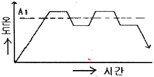
- 망상 Fe3C를 없앤다.
- Fe3C의 망상을 크게 한다.
- 펄라이트의 생성 및 편상화 한다.
- 페라이트와 시멘타이를 층상화 한다.
(정답률: 65%)
60. SM45C의 담금질 경도(HRC)는 얼마인가?
- 35
- 60
- 85
- 100
(정답률: 61%)
4과목: 재료시험
61. 다음 어느 조건에서 마모가 가장 많이 일어나는가?
- 표면경도가 낮을 때
- 접촉압력이 적을 때
- 윤활상태가 좋을 때
- 접촉면이 매끄러울 때
(정답률: 70%)
62. 균열 성장 및 소성 변형과 같은 재료 내의 변형과정에서 발생하는 탄성파를 검출함으로써 재료 내의 변호를 알아내어 파괴를 예측하는 비파괴검사 방법은?
- 누설시험
- 스트레인측정
- 음향방출시험
- 침투탐상시험
(정답률: 60%)
63. 응력 측정법에서 스트레스 코딩법에 대한 설명 중 틀린 것은?
- 유효 표점거리가 0(zero)이다.
- 목적물의 표면에 대한 어떤 점의 주응력 및 스트레인의 방향을 알 수 있다.
- 재질, 형상, 하중 작용 방식 등에 관계없이 기계부품 및 구조물에 응용할 수 있다.
- 전반적인 스트레스 분포보다 국부적인 분포상태를 알고자 할 때 사용한다.
(정답률: 42%)
64. 재료에 대한 강성계수 G를 측정하는 시험법은?
- 피로 시험
- 인장 시험
- 경도 시험
- 비틀림 시험
(정답률: 57%)
65. 미소경도시험을 적용하는 경우가 아닌 것은?
- 도금층 등의 측정
- 주철품의 표면 측정
- 절삭공구의 날부위 경도 측정
- 시험편이 작고 경도가 높은 부분의 측정
(정답률: 48%)
66. 자력결함 검사에서 교류를 사용하여 표면 결함을 검출할 수 있는 것은 무엇 때문인가?
- 충격 효과
- 질량 효과
- 표피 효과
- 방사 효과
(정답률: 61%)
67. 크리프 시험에서 크리프곡선의 현상(제1단계-제2단계-제3단계)을 옳게 구분한 것은?
- 감속 크리프 - 가속 크리프 - 정상 크리프
- 감속 크리프 - 정상 크리프 - 가속 크리프
- 가속 크리프 - 정상 크리프 - 감속 크리프
- 정상 크리프 - 가속 크리프 - 감속 크리프
(정답률: 60%)
68. 두께가 t(mm)인 철판을 직경 d(mm)인 원형의 펀치로 전단하여 관통시킬 때 전단응력(τ)을 계산하는 식으로 옳은 것은? (단, P=전단하중, A=전단면적이다.)
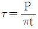
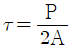
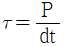
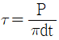
(정답률: 59%)
69. 상대적으로 경한 입자나 미세돌기와의 접촉에 의해 표면으로부터 마모입자가 이탈되는 현상으로 표면으로부터 마모입자가 이탈되는 현상으로 마모 면에 긁힘 자국이나 끝이 파인 홈들이 나타나는 마모는?
- 연삭 마모
- 응착 마모
- 부식 마모
- 표면피로 마모
(정답률: 65%)
70. 다음 방사선 동위원소 중 반감기가 가장 긴 것은?
- Th-170
- Co-60
- Ir-192
- Cs-137
(정답률: 47%)
71. 직경이 14mm인 인장 시험편을 인장시험 하였다. 최대 하중 12500kgf에서 파단 되었다면, 이때 인장강도는 약 얼마인가?
- 62.5 kgk/mm2
- 78.2 kgk/mm2
- 81.2 kgk/mm2
- 92.4 kgk/mm2
(정답률: 53%)
72. 로크웰경도 시험에서 C 스케일을 사용할 때 시험하중은 몇 kg인가?
- 50
- 100
- 150
- 200
(정답률: 57%)
73. 주사전자현미경의 관찰용도로 적합하지 않은 것은?
- 금속의 피로파단면
- 금속의 표면마모상태
- 금속기지 중의 석출물
- 금속재료의 패턴(patterm) 분석
(정답률: 51%)
74. 결정입도 측정에 대한 설명으로 틀린 것은?
- 입자크기가 모든 방향으로 동일한지 판정할 필요가 있다.
- 결정입계나 입자평면의 부식을 잘 해야 측정에 유리하다.
- 입자크기는 현미경 배율에 따른 차이가 없으므로, 배율을 중요하지 않다.
- 평균입도를 얻기 위해사 서로 다른 장소에서 최소한 3번 정도 측정해야 한다.
(정답률: 73%)
75. 설퍼프린트법에 의한 황 편석 분류에서 역편석의 기호는?
- Sc
- SI
- SN
- SD
(정답률: 61%)
76. 재료를 파괴하여 인성이나 취성을 시험하는 시험방법은?
- 충격시험
- 비틀림시험
- 마모시험
- 경도시험
(정답률: 70%)
77. 취성재료 압축시험에서 ASTM이 추천한 봉상단주형 시편의 높이(h)와 직경(d)의 비는 어느정도가 가장 적당한가?
- h = 10d
- h = 5d
- h = 3d
- h = 0.9d
(정답률: 52%)
78. 임의의 원소에 대한 격자간 거리와 결정구조를 결정하기 위한 시험은?
- 불꽃시험법
- 응력측정법
- 염수분무 시험법
- X=선 회절시험법
(정답률: 70%)
79. 안전보건교육의 단계별 3종류에 해당하지 않는 것은?
- 기초교육
- 지식교육
- 기능교육
- 태도교육
(정답률: 56%)
80. 동(Cu), 황동, 청동 등의 부식제로 사용되는 것은?
- 염화제2철 용액
- 수산화나트륨 용액
- 피크린산 알콜 용액
- 질산 아세트산 용액
(정답률: 64%)